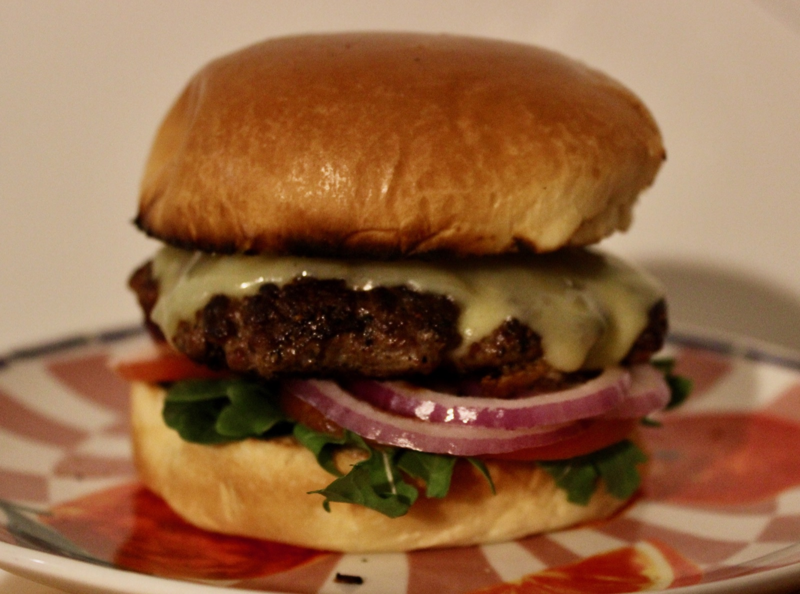

A proper homemade cheeseburger: a thick, well-crusted beef patty seasoned with nothing but salt and pepper, melted cheddar, garlicky aioli, tomato relish and fresh rocket, tomato and red onion, all in a toasted brioche bun.
Good beef doesn't need much. Mince with around 20% fat keeps the patties juicy, and seasoning just before they hit the pan gives the best crust.
Get the pan properly hot and leave the patties alone until they release easily. That dark crust is where all the flavour is.

4 servings
20–25 mins • Weeknight • Base: 4 servings
Beef is one of the best sources of easily absorbed iron and zinc, along with plenty of protein and vitamin B12. The cheddar adds calcium, and the rocket, tomato and red onion bring some freshness, vitamin C and fibre to balance the richness.